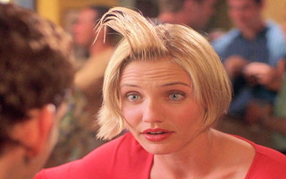
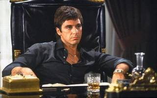

Vincent Vega (John Travolta) and Jules Winnfield (Samuel L. Jackson) are hitmen with a penchant for philosophical discussions. In this ultra-hip, multi-strand crime movie, their storyline is interwoven with those of their boss, gangster Marsellus Wallace (Ving Rhames) ; his actress wife, Mia (Uma Thurman) ; struggling boxer Butch Coolidge (Bruce Willis) ; master fixer Winston Wolfe (Harvey Keitel) and a nervous pair of armed robbers, "Pumpkin" (Tim Roth) and "Honey Bunny" (Amanda Plummer).

1998 - There's something about Mary
Ted's (Ben Stiller) dream prom date with Mary (Cameron Diaz) never happens due to an embarrassing injury at her home. Years later, Ted hires Pat Healy (Matt Dillon) to track down Mary so he can reconnect with her. Pat lies to Ted about Mary and he finds out everything he can about her to trick her into dating him. Ted travels to meet Mary and has to weave through the web of lies that Pat and Mary's friend Tucker (Lee Evans) have woven to try and win her over.

1983 - Scarface
After getting a green card in exchange for assassinating a Cuban government official, Tony Montana (Al Pacino) stakes a claim on the drug trade in Miami. Viciously murdering anyone who stands in his way, Tony eventually becomes the biggest drug lord in the state, controlling nearly all the cocaine that comes through Miami. But increased pressure from the police, wars with Colombian drug cartels and his own drug-fueled paranoia serve to fuel the flames of his eventual downfall.